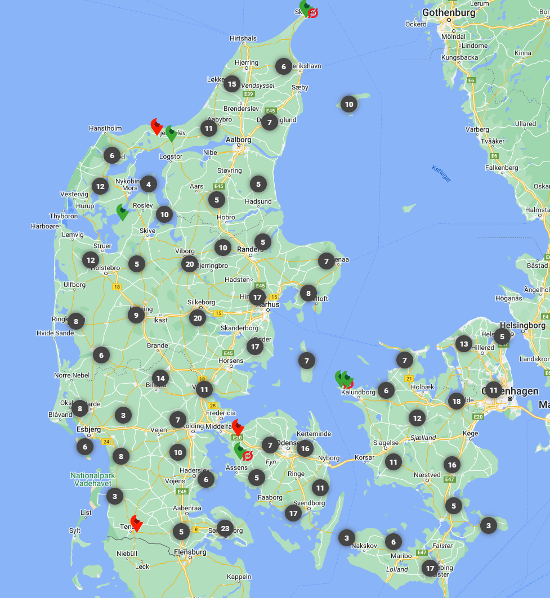

Gårdbutikken
Velkommen til Gårdbutikken,
Find lokale lækkerier her.
Hos Gårdbutikken mener vi, at det skal være nemt og hyggeligt at finde lokale fødevarer. Derfor har vi skabt en platform, der samler alle de bedste gårdbutikker, stalddørssalg og vejboder fra hele Danmark. Uanset om du leder efter friske grøntsager, lækre mejeriprodukter, lokalt kød eller håndlavede specialiteter, kan du finde det hos os.

Åbningstider: 10-16
CVR: 3243543344
E-mail: Gårdbutik.dk